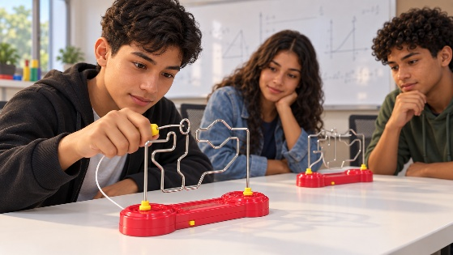

01
Desafio da Argola Elétrica
Coordenação motora, atenção e controle do movimento
Materiais previstos: 2 unidades.
Como jogar e o que observar
Objetivos e regras
Conduzir a argola do início ao fim sem tocar o arame. Ao tocar o circuito, som e luz sinalizam o erro. Reiniciar ou registrar até onde chegou. O brinquedo não aplica choque.
Funções nervosas superiores
Atenção sustentada, controle inibitório, monitoramento do erro e autorregulação do movimento.
Aprendizagem matemática
Trajetos, orientação espacial, estimativa de distância, controle de velocidade e comparação entre tentativas.